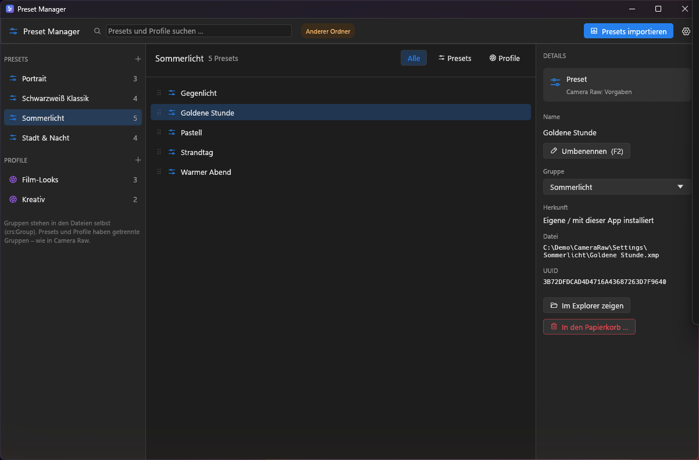

Preset Manager
Presets und Profile von Photoshop und Lightroom Classic ordnen, verstehen und ein- oder ausschalten.
Kostenlos und quelloffen (MIT) · kein Konto, keine Werbung, keine Datensammlung

Was die App kann
Die ganze Sammlung sehen
Alle installierten Presets und Profile, getrennt wie in Camera Raw, mit Suche und Filtern.
Ordnung halten
Umbenennen, in andere Gruppen verschieben, sortieren, Gruppen anlegen und zusammenführen – auch für viele auf einmal.
Presets ein- und ausschalten
Deaktivierte Presets bleiben hier erhalten, erscheinen aber nicht mehr in Photoshop und Lightroom.
Sehen, was ein Preset macht
Eine kurze Beschreibung in Worten, Vorher/Nachher auf deinem eigenen Foto, jede geänderte Einstellung wie in Camera Raw.
Neue Pakete hinzufügen
Ordner oder ZIP-Datei ins Fenster ziehen. Bereits installierte Presets werden erkannt.
Nichts geht verloren
Rückgängig und Wiederholen, Gelöschtes kommt in den Papierkorb, jede Datei wird vor dem Ändern gesichert.
So funktioniert es
Photoshop, Photoshop (Beta) und Lightroom Classic lesen Presets aus einem gemeinsamen Ordner, %APPDATA%\Adobe\CameraRaw. Preset Manager arbeitet direkt mit diesen Dateien – eine eigene Bibliothek gibt es nicht. Änderungen erscheinen in den Adobe-Programmen nach einem Neustart. Die App schreibt nur in diese Ordner:
| Was | Wo |
|---|---|
| Presets und Profile | %APPDATA%\Adobe\CameraRaw\ |
| Einstellungen | %APPDATA%\PresetManager\ |
| Sicherungen, Protokoll für Rückgängig, Logdateien | %LOCALAPPDATA%\PresetManager\ |
Herunterladen
PresetManager-Setup.exe aus dem neuesten Release auf GitHub: keine Administratorrechte nötig, hält sich selbst aktuell. Eine portable ZIP-Datei liegt an derselben Stelle. Eine Fassung für den Microsoft Store ist unterwegs.
Hilfe und Datenschutz
Fragen, Fehlermeldungen und Ideen: GitHub Issues.
Preset Manager erhebt und sendet keine personenbezogenen Daten: Datenschutzerklärung.